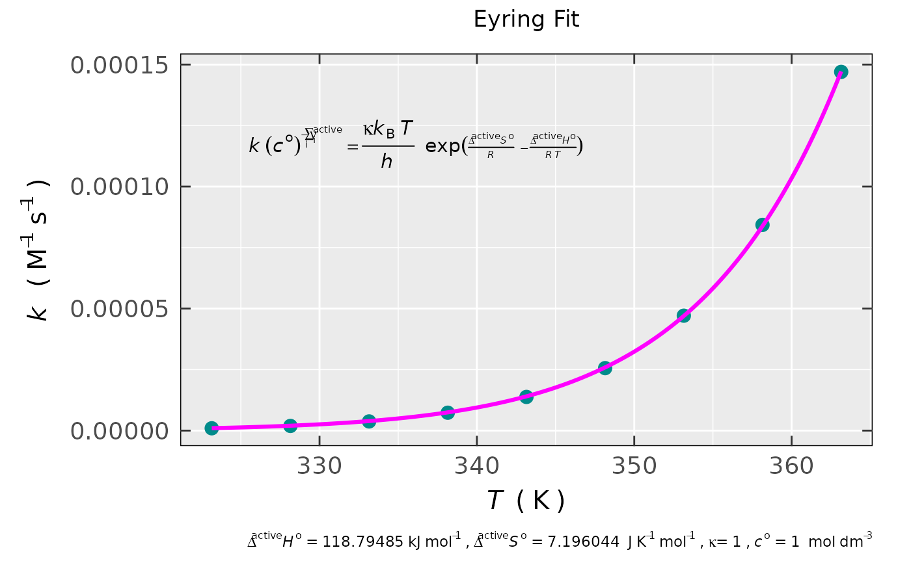

Reaction Activation Parameters Obtained by Essential Transition State Theory
Source:R/eval_kinR_Eyring_GHS.R
eval_kinR_Eyring_GHS.RdFinding the temperature-dependence of a rate constant (\(k\)) related to the elementary radical reaction, using the essential
transition state theory (TST). The activation parameters, such as \(\Delta^{\ddagger} S^o\) and \(\Delta^{\ddagger} H^o\)
are obtained by the non-linear fit (see the general nls R function) of the Eyring expression
(its non-linear form, see Details) on the original \(k\) vs \(T\) relation (please,
refer to the data.kvT argument). The latter can be acquired by the eval_kinR_EPR_modelFit
from sigmoid-integrals of the EPR spectra recorded at different temperatures. Finally, the activation Gibbs energy
(\(\Delta^{\ddagger} G^o\)) is calculated, using the optimized \(\Delta^{\ddagger} S^o\) and \(\Delta^{\ddagger} H^o\),
for each temperature in the series.
Usage
eval_kinR_Eyring_GHS(
data.kvT,
rate.const,
rate.const.unit = "s^{-1}",
Temp,
Temp.unit = "K",
transmiss.coeff = 1,
fit.method = "default"
)Arguments
- data.kvT
Data frame object, which must include two essential columns: rate constant (\(k\) of an elementary radical reaction) and the corresponding temperatures at which the \(k\) was acquired.
- rate.const
Character string, pointing to rate constant column header in the actual
data.kvTdata frame.- rate.const.unit
Character string, referring to rate constant unit. This has to be specified using the
plotmathnotation, likerate.const.unit = "M^{-1}~s^{-1}"orrate.const.unit = "s^{-1}"(default), because it is automatically applied as \(y\)-axis unit in the graphical output by the{ggplot2}.- Temp
Character string, pointing to temperature column header within the original
data.kvTdata frame.- Temp.unit
Character string, corresponding to temperature unit related to
Temp. Temperature can be defined in the following units:Temp.unit = "K"(kelvin, default),Temp.unit = "oC"(degree Celsius) orTemp.unit = "oF"(degree Fahrenheit). If other than default specified, temperature values (column characterized by theTempargument) are automatically converted into"K"(kelvins).- transmiss.coeff
Numeric value, corresponding to probability that the activated complex is transformed into products. Default:
transmiss.coeff = 1(\(100\,\%\)).- fit.method
Character string, corresponding to method applied to fit the theoretical Eyring relation (by optimizing the activation parameters, see
Details) to the experimental \(k\) vs \(T\) dependence. For this purpose, thenlsfunction is used. Therefore, all the methods, defined under itsalgorithmargument, are available:"default"(corresponding to Gauss-Newton algorithm),"plinear", which is Golub-Pereyra algorithm or"port"(Fortran PORT, "portable" library for numerical computation).
Value
As a result of the Eyring-relation fit, list with the following components is available:
- df
Data frame, including the original
data.kvT+ the column of \(\Delta^{\ddagger} G^o\), with the name ofDeltaG_active_kJ_per_mol, as well asfitted/predicted values of the rate constant and finally, the corresponding residuals.- df.fit
Data frame including temperature (in the same region like in the original
data.kvT, however with the resolution of 1024 points) and the corresponding.fitted\(k\), according to Eyring model.- plot
Static ggplot2-based object/list, showing graphical representation of the non-linear fit, together with the Eyring equation.
- plot.ra
GGplot2 object (related to simple residual analysis), including two main plots: Q-Q plot and residuals vs predicted/fitted \(k\) vs \(T\) from the Eyring fit.
- df.coeffs.HS
Data frame object, containing the optimized (best fit) parameter values (
Estimates), their correspondingstandard errors,t-as well asp-valuesfor both \(\Delta^{\ddagger} H^o\) and \(\Delta^{\ddagger} S^o\).- converg
List, containing fitting/optimization characteristics like number of evaluations/iterations (
N.evals); character denoting the (un)successful convergence (message) and finally, standard deviation of the residuals (residual.sd), which is defined as: $$\sqrt{\sum_i (y_i - y_{i,\text{fit/model}})^2\,/\,(N - k_{\text{pars}} - 1)}$$ where \(N\) is the number of observations and \(k_{\text{pars}}\) is the number of optimized parameters. Therefore, the smaller theresidual.sd, the better the Eyring-relation fit.
Details
The basic assumption of the Transition State Theory (TST) is the existence of activated state/complex, formed
by the collision of reactant molecules, which does not actually lead to reaction products directly. The activated state (AS)
is formed as highly energized, and therefore as an unstable intermediate, decomposing into products of the reaction.
Accordingly, the reaction rate is given by the rate of its decomposition. Additional important assumption for TST
is the presence of pre-equilibrium (characterized by the \(K^{\ddagger}\) constant) of the reactants with
the activated complex (AC). Because the latter is not stable, it dissociates with motion along the corresponding
bond-stretching coordinate. For this reason, the rate constant (\(k\)) must be related to the associated vibration
frequency (\(\nu\)). Thus, every time, if the AC is formed, the \(k\) of AC-dissociation
actually equals to \(\nu\). Nevertheless, it is possible that the AC will revert back to reactants and therefore,
only a fraction of ACs will lead to product(s). Such situation is reflected by the transmission coefficient \(\kappa\)
(see also the argument transmiss.coeff), where \(k = \kappa\,\nu\).
According to statistical thermodynamics, the equilibrium constant can be expressed by the partition function (\(q\))
of the reactants and that of the AC. By definition, each \(q\) corresponds to ratio of total number of particles
to the number of particles in the ground state. In essence, it is the measure of degree to which the particles
are spread out (partitioned among) over the energy levels. Therefore, taking into account the energies of a harmonic quantum
oscillator vibrating along the reaction coordinate as well as partition functions of the AC and those of the reactants,
the rate constant can be expressed as follows (see e.g. Ptáček P, Šoukal F, Opravil T (2018) in the References):
$$k = \kappa\,(k_{\text{B}}\,T\,/\,h)\,K^{\ddagger}$$
where the \(k_{\text{B}}\) and \(h\) are the Boltzmann and Planck constants, respectively, \(T\) corresponds
to temperature and finally, the \(K^{\ddagger}\) represents the equilibrium constant including the partition functions
of reactants and that of the AC. In order to evaluate the AC partition function, its structure must be known.
However, often, due to the lack of structural information, it is difficult (if not impossible) to evaluate
the corresponding \(q^{\ddagger}(\text{AC})\). Therefore, considering the equilibrium between the reactants and the AC,
one may express the \(K^{\ddagger}\) in terms of Gibbs activation energy (\(\Delta^{\ddagger} G^o\)),
because \(\Delta^{\ddagger} G^o = - R\,T\,ln K^{\ddagger}\) and thus the Eyring equation reads:
$$k = \kappa\,(k_{\text{B}}\,T\,/\,h)\,exp[- (\Delta^{\ddagger} G^o)/(R\,T)] =
\kappa\,(k_{\text{B}}\,T\,/\,h)\,exp[- (\Delta^{\ddagger} H^o)/(R\,T)]\,exp[\Delta^{\ddagger} S^o / R]$$
where \(R\approx 8.31446\,\text{J}\,\text{mol}^{-1}\,\text{K}^{-1}\) is the universal gas constant and the upper index \(^o\)
denotes the standard molar state (see IUPAC (2019) in the References). Previous formula is applied
as a model to fit the experimental \(k\,\,vs\,\,T\) (see the argument data.kvT) relation, where both
the \(\Delta^{\ddagger} S^o\) and the \(\Delta^{\ddagger} H^o\) (in the graphical output, are also denoted as
\(\Delta^{active} S^o\) and \(\Delta^{active} H^o\), respectively) are optimized using the fit.method
(by the nls function). In the first approach, both latter are considered as temperature independent
within the selected temperature range. Often, the Eyring equation is not applied in the original form,
however in the linearized one. Nevertheless, the latter is not recommended as a model for fitting the experimental \(k(T)\)
(see also Lente G, Fábián I, Poë AJ (2005) in the References). The reason inherits in the misinterpretation
of the extrapolation to \(T\rightarrow \infty\) (or \(1/T\rightarrow 0\)) by which the \(\Delta^{\ddagger} S^o\)
is obtained and thus it is unreliable. Accordingly, the original exponential Eyring form is recommended
as a model to fit the experimental \(k(T)\).
The \(k\)-unit depends on the molecularity of the reaction,
please also refer to the rate.const.unit argument. Therefore, the left hand site of the Eyring equation above
must be multiplied by the standard molar concentration \(c^o = 1\,\text{mol}\,\text{dm}^{-3}\):
$$k\,(c^o)^{- \sum_i \nu_i^{\ddagger}}$$
where the \(\sum_i \nu_i^{\ddagger}\) goes through stoichiometric coefficients (including the negative sign for reactants)
of the AC formation reaction (therefore the index \(^{\ddagger}\) is used), i.e. for the bi-molecular reaction,
the sum results in -1, however for the mono-molecular one, the sum results in 0.
While the transition state theory (TST) is a helpful tool to get information about the mechanism of an elementary reaction, it has some limitations, particularly for radical reactions. Couple of them are listed below.
One should be very careful if applied to elementary steps in a multistep reaction kinetics (like consecutive reactions, example shown in
eval_kinR_ODE_model). If the intermediate (e.g. in the consecutive reaction mechanism) possesses a short life-time, the TST probably fails.For very fast reactions the assumed equilibrium between the reactants and the AC won't be reached. Therefore, the spin trapping reactions, which \(k\)s may actually fall into the order of \(10^9\,\text{dm}^3\,\text{mol}^{-1}\,\text{s}^{-1}\) (or oven higher, see Kemp TJ (1999) in the
References) should be taken with extreme caution in terms of TST.Formation of AC in TST is based on classical mechanics, that is molecules/atoms will only collide, having enough energy (to form the AC), otherwise reaction does not occur. Whereas, taking into account the quantum mechanical principle, molecules/atoms with any finite energy may (with a certain probability) tunnel across the energy barrier. Such effect will be less probable for high energy barriers, however e.g. for radical-radical recombination, where the barriers are typically very low, the tunneling probability is high and TST may fail. In addition, such reactions proceed relatively fast and therefore the TST (Eyring fit) can also strongly bias the activation parameters. This type of reactions may also exhibit negative \(k\) vs \(T\) dependence (see Wardlaw DM and Marcus RA (1986) in the
References).
References
Engel T, Reid P (2013). Physical Chemistry, 3rd Edition, Pearson Education, ISBN 978-0-321-81200-1, https://elibrary.pearson.de/book/99.150005/9781292035444.
Ptáček P, Šoukal F, Opravil T (2018). "Introduction to the Transition State Theory", InTech., https://doi.org/10.5772/intechopen.78705.
International Union of Pure and Applied Chemistry (IUPAC) (2019). “Transition State Theory”, https://goldbook.iupac.org/terms/view/T06470.
Anslyn EV, Dougherty DA (2006). Modern Physical Organic Chemistry, University Science Books, ISBN 978-1-891-38931-3, https://uscibooks.aip.org/books/modern-physical-organic-chemistry/.
Lente G, Fábián I, Poë AJ (2005). "A common Misconception about the Eyring Equation", New J. Chem., 29(6), 759–760, https://doi.org/10.1039/B501687H.
Kemp TJ (1999), "Kinetic Aspects of Spin Trapping", Progress in Reaction Kinetics, 24(4), 287-358, https://doi.org/10.3184/007967499103165102.
Wardlaw DM and Marcus RA (1986), "Unimolecular reaction rate theory for transition states of any looseness. 3. Application to methyl radical recombination", J. Phys. Chem., 90(21), 5383-5393, https://doi.org/10.1021/j100412a098.
See also
Other Evaluations:
eval_DeltaXpp_Spec(),
eval_FWHMx_Spec(),
eval_extremeX_Spec(),
eval_gFactor(),
eval_gFactor_Spec(),
eval_interval_cnfd_tVec(),
eval_nu_ENDOR(),
eval_peakPick_Spec()
Examples
## demonstration on raw data, presented
## in https://www.rsc.org/suppdata/nj/b5/b501687h/b501687h.pdf
## considering reaction H+ + (S2O6)2- <==> SO2 + (HSO4)-
kinet.test.data <-
data.frame(k_per_M_per_s =
c(9.54e-7,1.91e-6,3.76e-6,
7.33e-6,1.38e-5,2.56e-5,
4.71e-5,8.43e-5,1.47e-4),
T_oC = c(50,55,60,65,70,
75,80,85,90)
)
activ.kinet.test.data <-
eval_kinR_Eyring_GHS(
data.kvT = kinet.test.data,
rate.const = "k_per_M_per_s",
rate.const.unit = "M^{-1}~s^{-1}",
Temp = "T_oC",
Temp.unit = "oC"
)
#
## preview of the original data
## + ∆G (activated) + fitted + residuals
activ.kinet.test.data$df
#> k_per_M_per_s T_K DeltaG_active_kJ_per_mol fitted residuals
#> 1 9.54e-07 323.15 116.46945 1.0051565e-06 -5.1156505e-08
#> 2 1.91e-06 328.15 116.43347 2.0020717e-06 -9.2071651e-08
#> 3 3.76e-06 333.15 116.39749 3.9069922e-06 -1.4699221e-07
#> 4 7.33e-06 338.15 116.36151 7.4767876e-06 -1.4678765e-07
#> 5 1.38e-05 343.15 116.32553 1.4043225e-05 -2.4322501e-07
#> 6 2.56e-05 348.15 116.28955 2.5908753e-05 -3.0875267e-07
#> 7 4.71e-05 353.15 116.25357 4.6987553e-05 1.1244654e-07
#> 8 8.43e-05 358.15 116.21759 8.3827467e-05 4.7253271e-07
#> 9 1.47e-04 363.15 116.18161 1.4721446e-04 -2.1446395e-07
#
## preview of the non-linear fit plot
activ.kinet.test.data$plot

#
## preview of the optimized (activated)
## ∆S and ∆H parameters
activ.kinet.test.data$df.coeffs.HS
#> # A tibble: 2 × 5
#> term estimate std.error statistic p.value
#> <chr> <dbl> <dbl> <dbl> <dbl>
#> 1 dS 7.20 1.08 6.66 2.89e- 4
#> 2 dH 118795. 390. 305. 1.09e-15
#
## compare values with those presented in
## https://www.rsc.org/suppdata/nj/b5/b501687h/b501687h.pdf
## ∆S = (7.2 +- 1.1) kJ/mol*K & ∆H = (118.80 +- 0.41) kJ/mol
#
## preview of the new `.fitted` data frame
activ.kinet.test.data$df.fit
#> # A tibble: 1,024 × 2
#> T_K .fitted
#> <dbl> <dbl>
#> 1 323. 0.00000101
#> 2 323. 0.00000101
#> 3 323. 0.00000102
#> 4 323. 0.00000102
#> 5 323. 0.00000103
#> 6 323. 0.00000103
#> 7 323. 0.00000104
#> 8 323. 0.00000104
#> 9 323. 0.00000105
#> 10 324. 0.00000106
#> # ℹ 1,014 more rows
#
## preview of the convergence measures
activ.kinet.test.data$converg
#> $N.evals
#> [1] 46
#>
#> $message
#> [1] "converged"
#>
#> $residual.sd
#> [1] 2.6475333e-07
#>